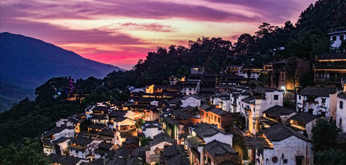

公司介绍
婺源篁岭文旅股份有限公司于2009年09月10日成立。公司拥有员工400余人，拥有齐全的管理机构和完善的管理体制，通过多元化经营、高品质服务，将公司打造成乡村旅游、文化旅游的引领企业。公司前后投资近6亿元打造篁岭景区，开创了独有的“篁岭模式”。通过市场经济杠杆，以古村产权收购、搬迁安置结合古民居异地搬迁保护的模式进行村落保护性开发，保持了古村文化的“原真性”。并以优美的山岭环境为背景、千亩梯田为依托、古村落民俗风情为主线，复原丰富的非遗民俗文化体验活动，将篁岭打造成国际化乡村旅游示范区、休闲农业示范基地、乡村旅游目的地、徽州文化生态保护试验区，婺源最具民俗特色的文化艺术影视村落。
篁岭景区简介
挂在山崖上的篁岭古村，地处婺源石耳山脉，面积7平方公里，由索道空中揽胜、村落天街访古、梯田花海寻芳及晒秋民俗拾趣等游览区域组合而成。
千棵古树环绕、万亩梯田簇拥，造就了580年世外桃源般的山居田园隐居生活。篁岭古村数百栋徽派民居在百米落差的坡面错落排布，每当日出山头，晨曦映照，
整个山间村落饱经沧桑的徽式民居土砖外墙与晒架上、圆圆晒匾里五彩缤纷丰收果实组合，绘就出世界独一无二的 “晒秋”农俗景观。
独特的晒秋景观成功入选“最美中国符号”，篁岭古村被联合国世界旅游组织评为“最佳旅游乡村”，还被网友誉为“最美乡愁体验地”、“世界最美村庄”。
春晒茶叶、夏晒辣椒、秋晒果蔬、冬晒乡俗……128户“古宅晒秋”，365天永不落幕的童话。